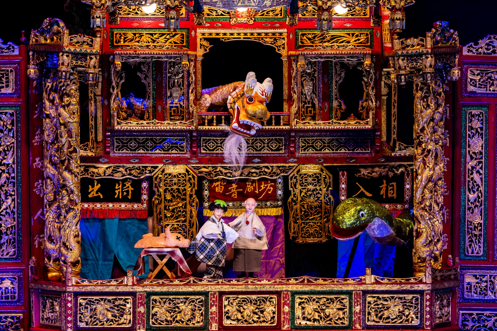
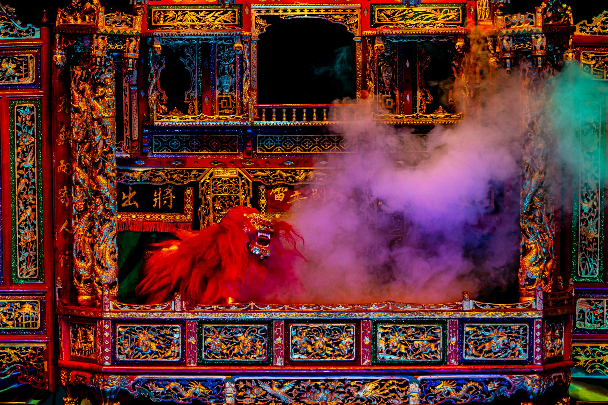
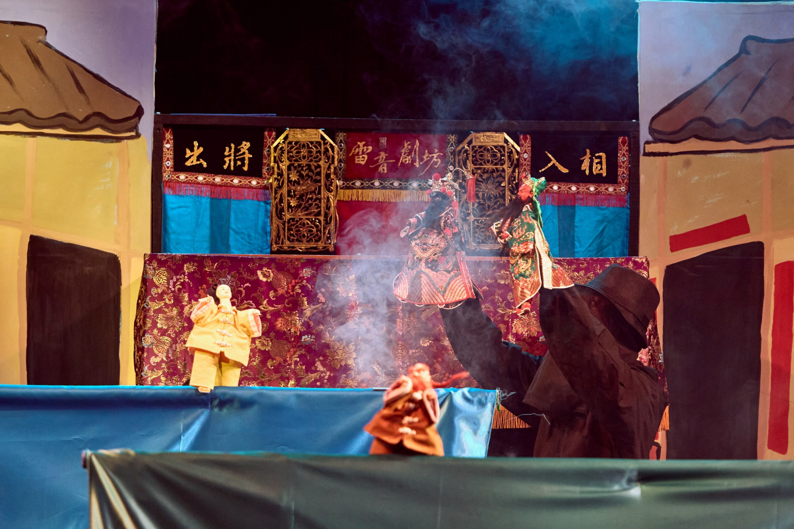
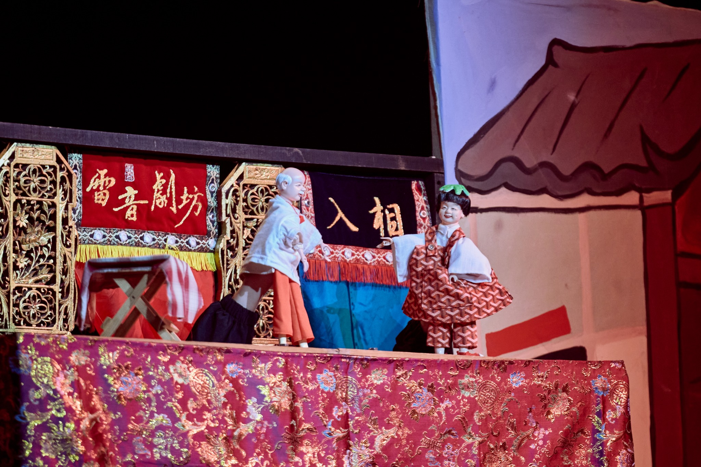

Puppet Theatre · 歌仔調布袋戲
《青瞑的龍蛇無青瞑》
The Legend of the Blind Dragon and Snake in Tainan
About the work
作品介紹
作品以臺南南鯤鯓一帶流傳的「青瞑龍、青瞑蛇」傳說為起點，將急水溪、曾文溪的河川記憶重新帶回舞臺。傳說裡，河川改道與水患被想像成失明龍蛇的橫衝直撞；本劇卻換一個位置提問：牠們真的看不見，還是人們只用自己的角度理解自然？
故事從現代的阿公與阿弘說起。被逐漸遺忘的青瞑龍與青瞑蛇在故事裡再次現身，回望牠們如何在風雨中誕生、如何因不熟悉力量而造成水患，也如何在一次次誤解後，與地方神明重新找到共存的方法。
Production stills
演出劇照




Tour history
演出足跡
思劇場 Thinkers’ Theater臺北市大同區
空軍三重一村・時藝劇場新北市三重區
新莊文化藝術中心演藝廳新北市新莊區
跨縣市巡演雲林、嘉義
傳藝 Go Young 校園巡演新北市 10 所國小
兒童布袋戲創作推廣校園巡演新北、臺北 5 所國小
兒童布袋戲劇本徵選試演臺灣戲曲中心小舞台